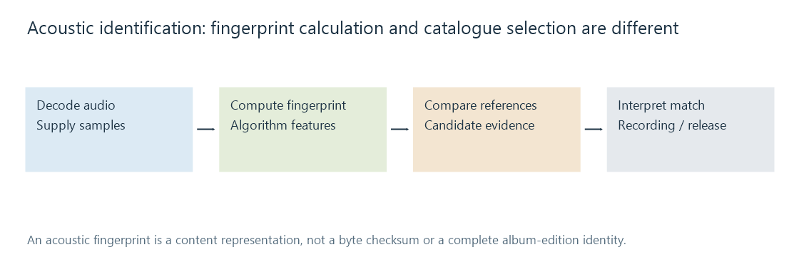
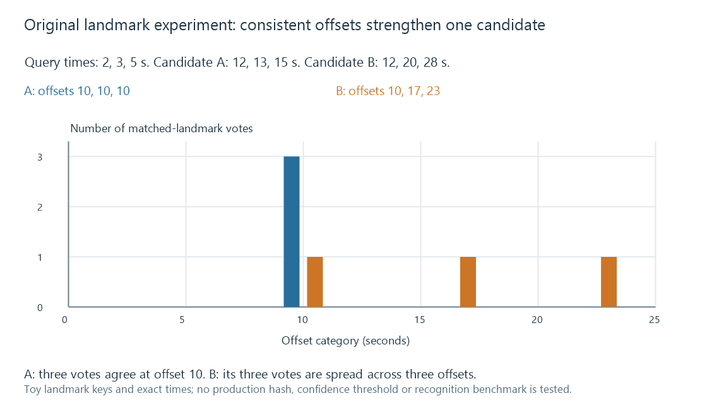

Acoustic fingerprinting
Acoustic fingerprinting derives a compact audio-content representation that a matching system can compare with known recordings, independently of filenames and byte checksums.
Acoustic fingerprinting builds a compact representation from audio content. A matching system compares that representation with indexed references to help identify recorded material.
This makes it useful when a filename or title tag is missing or misleading. It supplies another kind of evidence alongside descriptive matching.
Decode, describe, compare, identify
A pipeline first obtains audio samples, then computes its fingerprint representation. A lookup compares it with known reference data and returns candidate relationships or match evidence.

Chromaprint's library accepts decoded, uncompressed audio; its documentation explicitly separates fingerprint calculation from reading encoded file formats. A tool supplying it with samples therefore needs an appropriate decode path.
Fingerprint generation and provider lookup are also different operations. Computing a fingerprint locally does not inherently assign an artist, release or MusicBrainz identifier.
A landmark experiment makes timing consistency visible
One approach identifies useful time-frequency landmarks and compares hashed relationships. Avery Wang's ISMIR paper describes a landmark-based audio search design.
For an original simplified experiment, suppose three matched landmark keys occur at these positions:
| Landmark key | Query time | Candidate A time | Candidate A offset |
|---|---|---|---|
| hA | 2 s | 12 s | 10 s |
| hB | 3 s | 13 s | 10 s |
| hC | 5 s | 15 s | 10 s |
All three support the same displacement: the query excerpt begins ten seconds into candidate A.
Another candidate contains the same three simplified keys at 12, 20 and 28 seconds. Its offsets are 10, 17 and 23 seconds. It has isolated key matches without one consistently supported alignment.

The experiment illustrates why agreement in time helps reject accidental feature matches. It does not implement the paper's hashing, feature selection or a production confidence threshold.
A real system needs enough useful evidence, tolerance appropriate to its representation and a policy for ambiguous or weak matches. Short, repetitive or heavily altered audio can challenge those decisions.
Fingerprints and file hashes answer different questions
A byte checksum evaluates encoded bytes under a specified checksum algorithm. Changing the container or codec normally changes those bytes.
An acoustic representation instead describes chosen features of decoded content. A robust implementation can retain useful similarity across some encoding differences. Its invariances are design choices: a scheme tolerant of compression is not automatically tolerant of every pitch, speed, mix or noise change.
Chromaprint documents a particular design for near-identical audio and related uses. It should not be presented as identical to the landmark experiment above or as an unrestricted recognition solution for any short noisy recording.
A recording is not an album edition
A recognized recording can appear on an original album, a compilation and later issued products. An acoustic relationship alone does not identify which release's artwork, track number or release country belongs to the local album.
MusicBrainz identifiers keep recording, release and release-group relationships distinct. Use accompanying release metadata and track-list context where the action needs that level of identity.
An acoustic match also does not establish that two files are byte-identical, fully undamaged or equally high quality. The evidence concerns the features that were compared.
Apply the evidence at its actual boundary
For an Emby music-identification comparison, distinguish supported local tags, any fingerprint-capable integration and the catalogue relationship finally selected. This article explains fingerprint technology; it does not declare that every Emby installation performs the illustrated analysis automatically.
A useful match record names the algorithm/service context, supplied audio segment, candidate entity and relevant evidence.